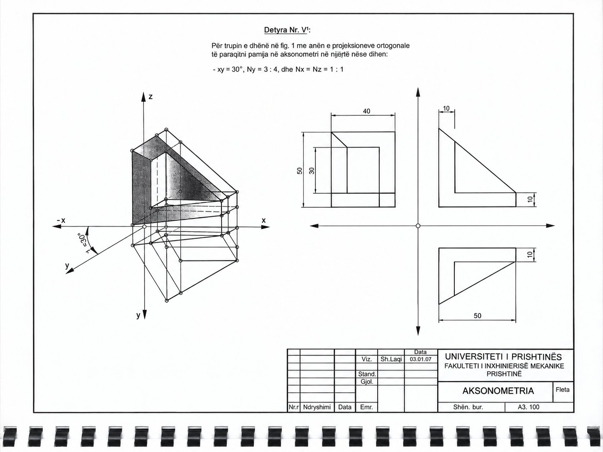

Animacioni vizatimi hap pas hapi, 29 hapa
Hap në dritare të plotë ↗
Në projektor hape në dritare të plotë; tastet ← → ndërrojnë hapin, h hap rrafshet, v ndërron pamjen.
Faqet e librit

Aksonometria e trupit nga projeksionet ortogonale
Për trupin e dhënë me anën e projeksioneve ortogonale të paraqitet pamja në aksonometri.
Të dhënat: Këndi xy = 30°; Nx = Nz = 1 : 1, Ny = 3 : 4; përmasat 50, 40, 30 dhe 10 mm
Kjo detyrë nuk është në librin e vitit 2009; fleta e saj (A3.100) është dhënë veçmas.
Në projektor hape në dritare të plotë; tastet ← → ndërrojnë hapin, h hap rrafshet, v ndërron pamjen.
